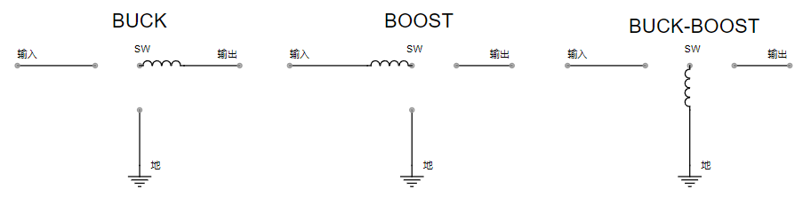

开关拓扑的演变
尖峰电压的消除
上文中，我们了解到了，电感在开关关断瞬间，会产生尖峰电压。这种尖峰电压会导致电路元件的损毁，是我们不愿意看到的。为了消除这种现象，我们需要找一个办法来解决。
由此，在电路中加入了二极管，对电路进行续流，防止了尖峰电压的产生。
电容的作用
为了使得电压输出的稳定，在输出回路中加入电容。电容具有两端电压无法突变的特性。这就类似与我们生活中常见的水塔。水塔在水压波动的时候，会自主调节一栋楼的水压，高水压的时候，存储，低水压的时候放出。电容的作用就类似水塔
自此，就构建出来一个稳定的基本$DC-DC$开关拓扑的电路
三种开关拓扑
我们了解到开关电源有基本的三种拓扑：$BUCK、BOOST、BUCK-BOOST$
交换结点（SW）
开关和二极管之间的结点，称为交换结点。每个$DC-DC$开关拓扑都有此结点（否则会有巨大的电压尖峰）
交换结点处不宜铺设太多的铜，否则会形成有效的电场天线。输出线可能会拾取辐射噪声传递给输出
为何是三种基本开关拓扑
多种方法可以构建既含有电感又能为电感电流提供续流回路的方法。
但是，只有三种连接方式可以满足输入输出之间有公共导线（地参考点），如图
